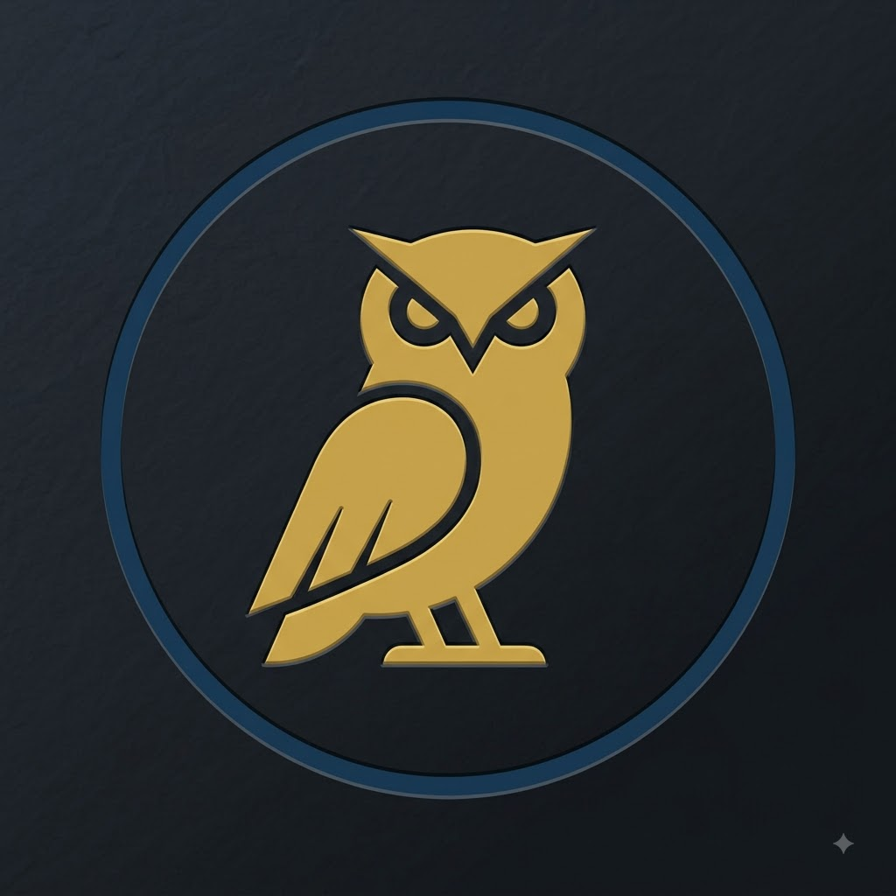

KLASSIEKE TALEN
Kies een taal
Latijn
Woordenschat, naamvallen, zinsontleding & meer
Grieks
Woordenschat, naamvallen, zinsontleding & meer
Hulpmiddelen
Woordenlijst op frequentie
Maak een frequentielijst van elke Latijnse of Griekse tekst
Etymologicon
Van Nederlands woord naar Latijnse of Griekse grondwoorden, en terug
Stijlfiguren
Interactief overzicht stijlfiguren & narratologie voor Latijn en Grieks
Cultuur & Civilisatie
Tijdlijnen, VR-rondleidingen en meer
Certamen
Realtime multiplayer woordspel voor Latijn en Grieks
Hulp bij Examens